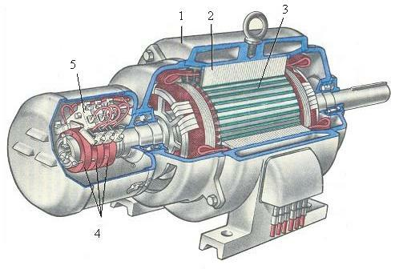

Двофазний (багатофазний) асинхронний двигун змінного струму — це один із найважливіших винаходів Ніколи Тесли, який змінив світ промисловості та енергетики.

Завдяки обертовому магнітному полю цей двигун зміг працювати без колекторів та щіток, що забезпечило неймовірну надійність та довговічність конструкції.
Демонстрація асинхронного двигуна Тесли та подальше ліцензування патенту Вестінгаузом, обидві події 1888 року, відбулися в період надзвичайної конкуренції між електричними компаніями. Три великі фірми — Westinghouse, Edison та Thomson-Houston — намагалися розвиватися в капіталомісткому бізнесі, фінансово підриваючи одна одну. Тоді навіть тривала пропагандистська кампанія «війни струмів», під час якої Edison Electric намагалася довести, що їхня система постійного струму краща і безпечніша за систему змінного струму Вестінгауза. Конкуренція на цьому ринку означала, що у Вестінгауза не буде ні готівки, ні інженерних ресурсів для негайного розвитку двигуна Тесли та пов'язаної з ним багатофазної системи.